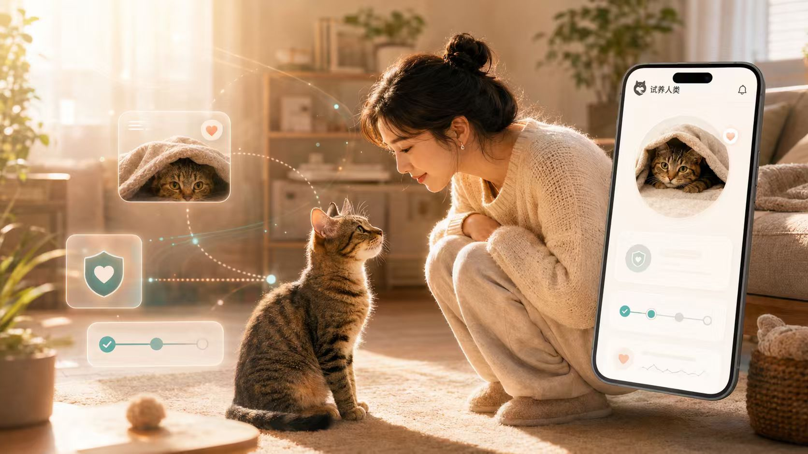

给流浪动物领养
做一次"未来预演"
AI 驱动的流浪动物领养预演工具，让领养从"一时心动"变成"真正准备好"。通过 7 天沉浸式 AI 情境模拟，帮助领养人和救助人提前发现潜在问题，建立真实信任。

每一次失败的领养，都是对动物的一次二次伤害。我们需要从源头解决问题。
担心冲动领养、退养、随意转送。每一次送出都需要极大的勇气，而每一次退养都是对救助人的打击和对动物的二次伤害。
被"领养滤镜"影响，看到可爱的照片就心动。但领养后才面对真实问题：行为问题、医疗费用、家庭阻力、时间精力投入。
躲藏不是不亲人，乱叫可能是害怕，不吃饭也许是因为恐惧。动物无法用语言表达自己的感受，需要人类更多的耐心和理解。
不只是信息匹配，而是关系预演。看看我们如何让领养从"看对眼"变成"准备好"。
信息展示 + 条件审核
展示动物照片、年龄、品种等基本信息
审核领养人是否有稳定住所、养宠经验等
救助人反复聊天确认，耗费大量精力
领养是否成功高度依赖主观判断和运气
领养后才发现不适应、家庭阻力、医疗问题
AI 关系预演 + 情境模拟
AI 生成 7 天领养剧本，提前体验真实场景
观察领养人在情境中的反应，发现责任盲区
自动识别反馈频率、医疗责任等关键摩擦点
自动生成个性化试养协议，把信任转化为约定
领养前就发现潜在问题，降低退养率
四步走，从"心动"到"准备好"，让每一次领养都经过充分预演。
基于动物的性格档案、健康状况和行为特征，AI 自动生成个性化的 7 天领养情境剧本，涵盖适应期可能遇到的各种真实场景。
领养人通过沉浸式 AI 对话，体验"领养后"的真实场景。每天解锁一个新情境，面对真实的挑战和选择，展现真实的应对方式。
救助人可以在系统中录入自己的底线要求、特殊关注点和过往经验。AI 会将这些信息融入情境剧本，确保预演场景真实反映救助人的关切。
AI 分析领养人在预演中的表现和救助人的关切，识别潜在摩擦点，自动生成个性化的试养协议。把模糊的信任转化为可执行的约定。
亲身感受一次完整的领养预演流程——从上传档案到签署协议。
AI 正在根据小布的档案生成预演...
小布领养案 · AI 基于预演摩擦点生成
既守护动物福利，又提升领养效率，让善意不再因为准备不足而变成遗憾。
减少冲动领养和退养的二次伤害，让每一只流浪动物都能找到真正准备好的家。
AI 将信任建立过程前置化、标准化和个性化，大幅缩短领养决策周期。
每一次领养都值得被认真对待。用10分钟预演，换一个不会后悔的决定。
开始你的领养预演 →